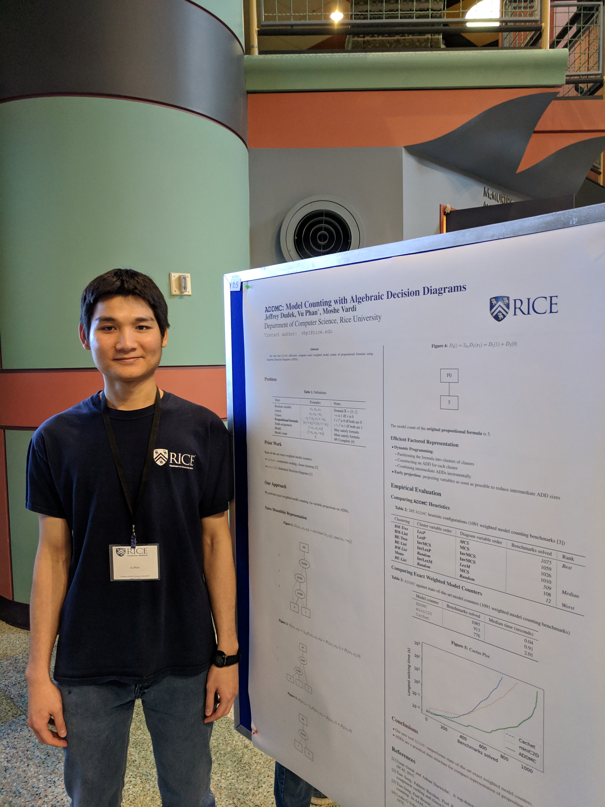

2025 Aug 22
Vu Phan, PhD

Vu Phan is skilled in
computation research (data structures, algorithms),
software development (C++, Java, Scala),
hardware validation (SystemVerilog, TCL),
data analysis (Python),
and technical writing (LaTeX).
Higher Education
2020 Jan – 2022 Aug: Doctor of Philosophy in Computer Science , Rice University
2017 Aug – 2019 Dec: Master of Science in Computer Science , Rice University
2014 Aug – 2017 Jul: Dual Bachelor of Science in Computer Science and Mathematics , Texas Tech University
Software Engineering
Bibliography
Vu Phan is the corresponding author of the following publications (authors are sorted by surnames).
Theses
Phan | Quantitative Reasoning on Hybrid Formulas with Dynamic Programming |
PhD thesis, Rice University 2022
Phan | Weighted Model Counting with Algebraic Decision Diagrams |
MS thesis, Rice University 2019
Conference Papers
Dudek, Phan, Vardi | ProCount: Weighted Projected Model Counting with Graded Project-Join Trees |
SAT 2021
Dudek, Phan, Vardi | DPMC: Weighted Model Counting by Dynamic Programming on Project-Join Trees |
CP 2020
Dudek, Phan, Vardi | ADDMC: Weighted Model Counting with Algebraic Decision Diagrams |
AAAI 2020
Workshop Paper
Phan | Syntactic Conditions for Antichain Property in Consistency Restoring Prolog |
ASPOCP 2018
Profiles
LinkedIn Google Scholar Semantic Scholar ORCID DBLP arXiv Zotero
Google Mail
vuphan314